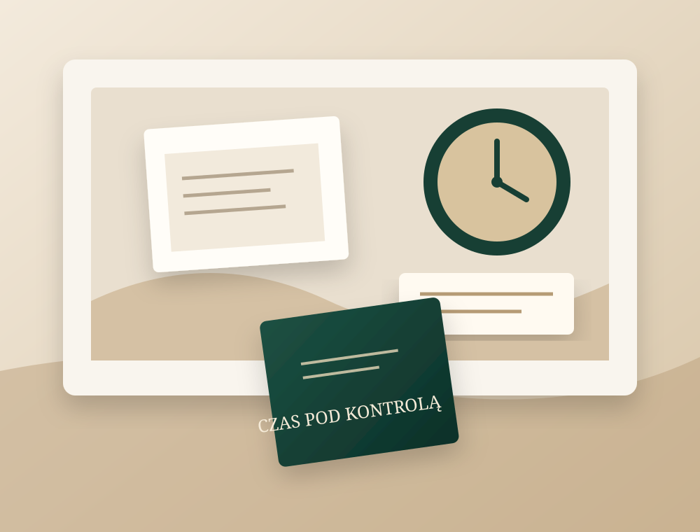
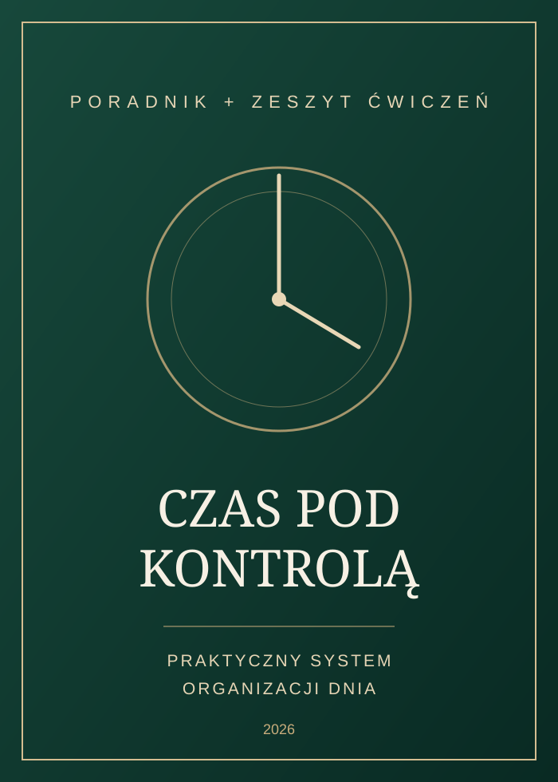
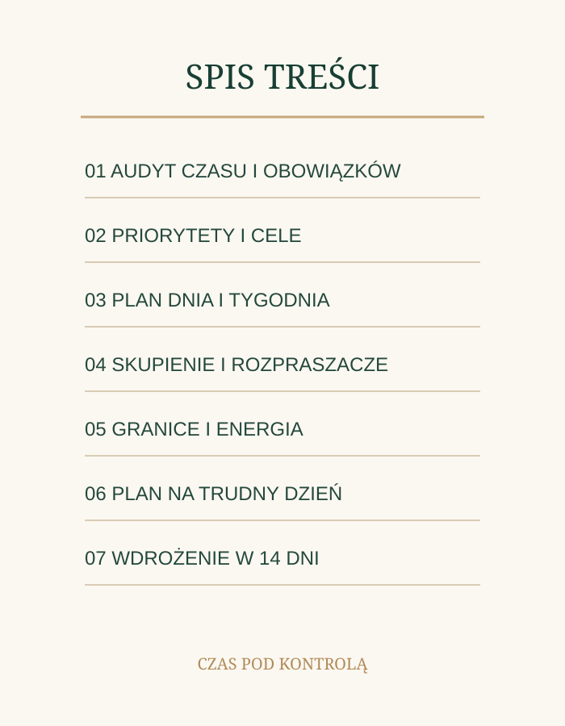
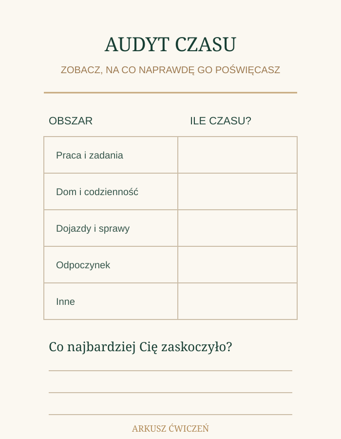

Za dużo na głowie
Próbujesz pamiętać o wszystkim — od terminów w pracy po drobne sprawy domowe.
MNIEJ CHAOSU. WIĘCEJ ŚWIADOMYCH DECYZJI.
Praktyczny system organizacji dnia, który pomoże Ci uporządkować obowiązki, wybrać priorytety i zaplanować tydzień — bez układania życia co do minuty.


Lista zadań rośnie, wiadomości przerywają pracę, a obowiązki domowe mieszają się z zawodowymi. To nie zawsze kwestia lepszej dyscypliny.
Próbujesz pamiętać o wszystkim — od terminów w pracy po drobne sprawy domowe.
Telefon, e-mail i kolejne prośby wybijają Cię z rytmu, zanim zdążysz wejść w skupienie.
Robisz pilne rzeczy innych osób, a zadania ważne dla Ciebie przesuwają się na później.
Wystarczy niespodziewana sprawa, by ambitny harmonogram przestał pasować do rzeczywistości.
Nie potrzebujesz kolejnego planu idealnego dnia. Potrzebujesz prostego sposobu, który uwzględnia prawdziwe życie.

„Czas pod kontrolą” prowadzi Cię od sprawdzenia, gdzie naprawdę znika czas, przez wybór priorytetów, aż po plan dnia i sposób reagowania na nieprzewidziane sytuacje.
Nie musisz kupować aplikacji ani zmieniać wszystkich nawyków naraz. Wystarczy kartka, notes lub narzędzie, którego już używasz.
31 rozdziałów tematycznych i praktyczne arkusze, które pomogą Ci przetestować rozwiązania w swoim rytmie.
Audyt czasu, mapa obowiązków i rozpoznawanie źródeł przeciążenia.
Priorytety, plan tygodnia, trzy wyniki na dzień i blokowanie czasu.
Skupienie, rozpraszacze, e-mail, komunikatory i bardziej konkretne spotkania.
Energia, granice, obowiązki domowe, opieka oraz praca na własny rachunek.
Plan awaryjny, odpoczynek, przegląd tygodnia i wdrożenie w 14 dni.

Po przejściu przez ćwiczenia możesz zbudować własny, prosty sposób organizacji — dopasowany do obowiązków, energii i możliwości.
Przenieś sprawy z pamięci do uporządkowanej listy z konkretnymi następnymi krokami.
Najpierw uwzględnij stałe zobowiązania, potem ważne zadania i bufor na niespodzianki.
Wybierz jeden główny rezultat i dwa dodatkowe zamiast tworzyć listę bez końca.
Ogranicz niepotrzebne przerwania i zapisuj, od czego wznowić zadanie.
Ćwicz komunikowanie terminów, zakresu i priorytetów w pracy oraz w domu.
Zdecyduj, co jest konieczne, co można przesunąć i co da się uprościć.
Przykłady w poradniku są uniwersalne. Możesz dopasować je do pracy zmianowej, pracy z klientami i obowiązków opiekuńczych.
PORADNIK + ZESZYT ĆWICZEŃ · 2026
Praktyczny system organizacji dnia dla zapracowanych osób.
Przycisk zostanie połączony z bezpiecznym koszykiem Naffy po wklejeniu linku do płatności. Zakup nie jest obecnie aktywny.
Przed publikacją uzupełnij informacje o platformie sprzedaży i sposobie dostarczenia pliku.
Produkt jest przygotowany jako plik PDF. E-book ma 34 strony.
Tak. Pliki PDF można otwierać na telefonach, tabletach i komputerach za pomocą czytnika PDF lub przeglądarki obsługującej ten format.
Nie jest potrzebne specjalistyczne oprogramowanie. Wystarczy aplikacja lub przeglądarka obsługująca PDF.
Sposób dostarczenia należy skonfigurować w Naffy. Po podłączeniu koszyka należy tu potwierdzić dokładny sposób i termin dostawy.
Tak. Zaczyna od audytu czasu i porządkowania obowiązków, a następnie przechodzi do priorytetów, planowania i wdrożenia systemu.
Nie. Publikacja nie gwarantuje określonej oszczędności czasu ani wzrostu produktywności. Efekty zależą m.in. od rodzaju pracy, obciążenia i sytuacji życiowej.